Welcome to my portfolio website! My name is Anders Steen and I am a computer science student at KTH. Here I present some of the things I have done as a student and in my free time that represent my skills and accomplishments. Click here to go to my personal github page.
Use the navigation bar at the bottom of the page to navigate between different sections of this site.
The best communication channel for contacting me is my KTH-email: astee@kth.se.
As part of the course DH2321 Information Visualization at KTH, I was part of a team with four other people, and we created this visualization. It shows the paths that the major characters of the Lord of the Rings trilogy take through the story, on a large interactive map.
My responsibility were prototyping in D3, creating the paths and creating promotional graphics.
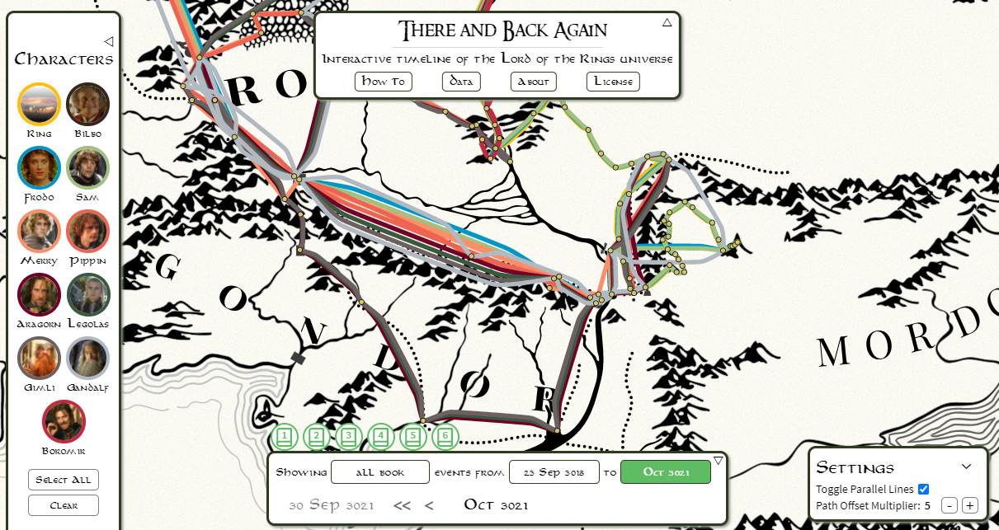I got tired of setting timers to know when to take breaks from work and study, so I solved the problem by creating the app called Breakr and released it on Google Play. I learned Android Studio rudimentally, and coded in Kotlin for the first time, and I'm pretty happy with the resulting app!
I know that I and probably many others have problems with putting YouTube down and not click on the next recommended video endlessly. Therefore, I created the Chrome extension YouTube Recommendation Decliner to automatically decline all recommended videos on YouTube. This is the first time I have dabbled in Chrome extensions, and it taught me a lot about how browsers work, and releasing on a new platform is always highly educational.
CorSA is a research project that is funded by Wallenberg AI, Autonomous Systems and Software Program (WASP). I was hired as a research engineer to create a human-robot interaction simulation that is essentially a game of chicken between the human agent and a robot. I was also tasked with making the simulation accessible via Amazon Mechanical Turk, and for collecting the experiment data.
A demo of the final version of the simulation (where no data is collected) is available here.
A project I did on my own in Unity as part of the course DH2323 Computer Graphics and Interaction. The goal was to explore the possibility of using metaballs to create a river simulation. During the course of the project a project blog was continually updated. The blog now contains the entire project progress history. The project's final result is available on the blog, and the final demo is also embedded below. The project report that was written after the implementation was complete is available here.
This project was made by a group of eight people including me in the course DD1393 Software Engineering in collaboration with a company called Tobii. The project was about developing a plugin for the virtual card game Faeria, which is developed using Unity, so that it could be played using your eyes when using one of Tobii's eye trackers. The project was nearly fully completed, but it was not possible to publish the plugin, despite the great majority of the project's goals being reached, and nearly all aspect of the game being playable using just your eyes. The main concepts of the plugin are shown in the video demo below, where everything that happens is controlled using an eye tracker.
A project in Unity with the goal of creating a physical simulation of a golf course, as part of the course DD1354 Models and Simulation. I was one of the two people working on the project together. The project also has a blog which was updated continually during the course of the project.
This link leads to a demonstration of the project's final results.
Most of my games are hosted on my itch.io page, some are highlighted below.
This game was made by me and my brother using Unity, as part of the GMTK 2021 game jam. It ended up in 56th place out of 5766 entries, meaning the top one percent! All the top 100 games of the jam are considered "winners", so I'm very excited about having created this game.
I did all the coding and some of the sound design, while my brother designed and created the art. We collaborated on the game design.
The game's itch.io site contains an online version of the game and a download link for a Windows build of the game.
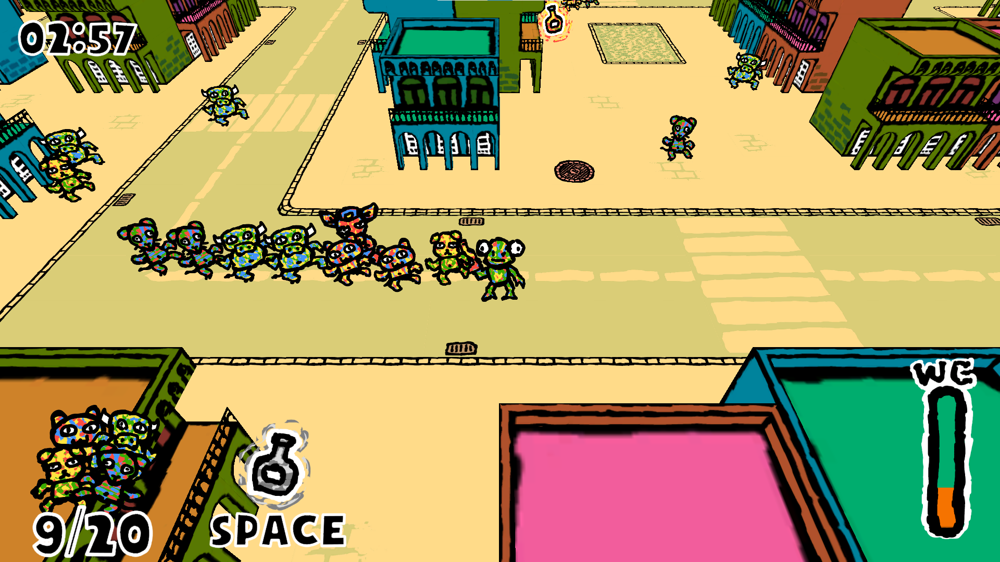An arcade-style game where you steer a ship powered by asteroids, hoovering up other asteroids and making sure not to pick up too much mass. The asteroids are attracted to each other by an accurate, if exaggerated, representation of gravitational forces as laid forth by Newton. The law of conservation of momentum is also at play in the game.
The game's Google Play page is where the game is available for download if you have an android phone.
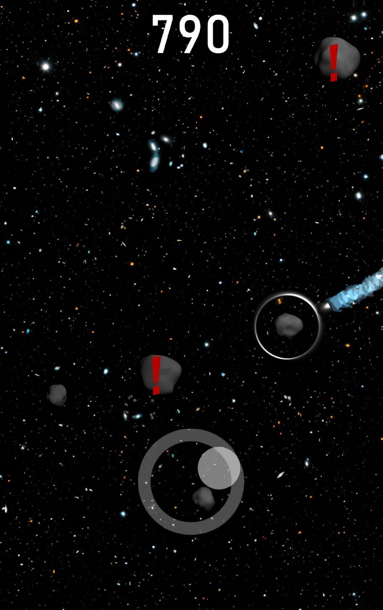A flying game where you play as a lazy seagull wanting to climb the heavens of the city. The game was made in Unity with a friend of mine as part of the ScoreSpace Jam #9.
The game's itch.io site contains a download link for a Windows build of the game.
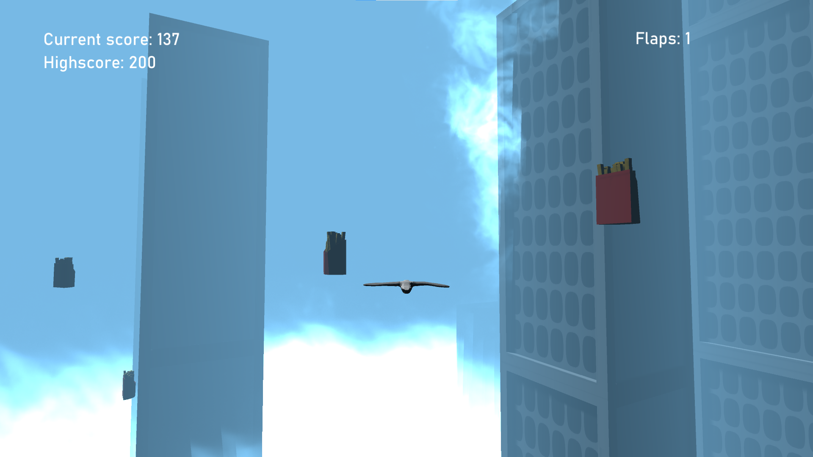An "out-of-control" platforming game I made in Unity with my brother for the Game Maker Toolkit's 2020 Game Jam.
The game's itch.io site hosts a WebGL build of the game as submitted to the jam.
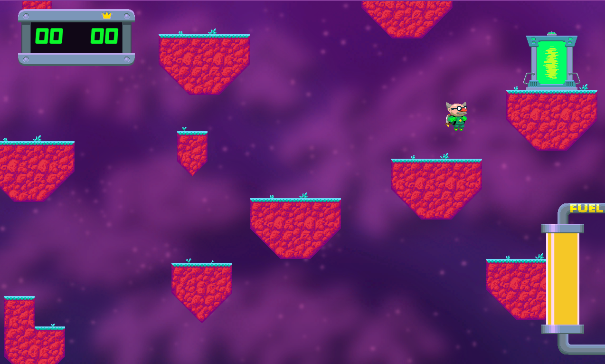A game project I took on on my own during the summer of 2018. It is an experimental game taking place in a single dimension, with the main mechanics of the game being centered on fast player reflexes. The game is complete, with the full version being available on Windows, Linux and Android.
The game's website contains download links for the computer versions and a link to the game's page on Google Play.
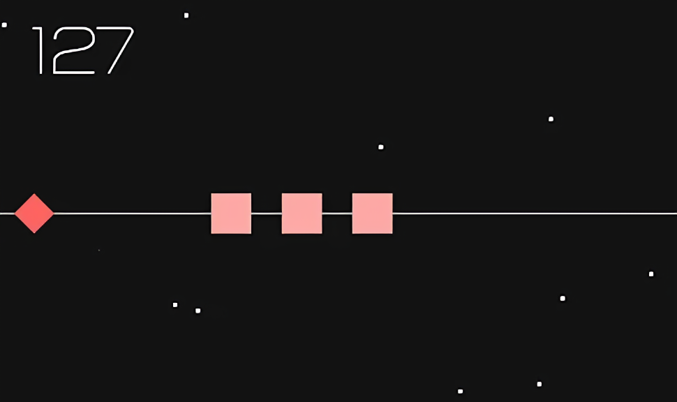A small, as of yet incomplete, game project in Unity as part of the course DD1349 Project in Introduction to Computer Science.
This link leads to the project's presentation website, which contains progress updates from the project, with playable versions from various stages during the course of the project.
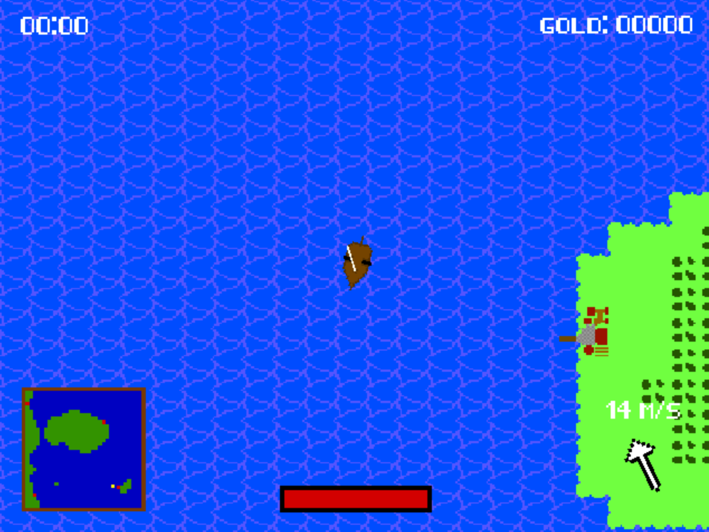My art is hosted on my instagram, and some of it is highlighted below.
This was my submission for Blender Guru Andrew Price's render challenge, where I remade the first render I ever made by following his tutorial.
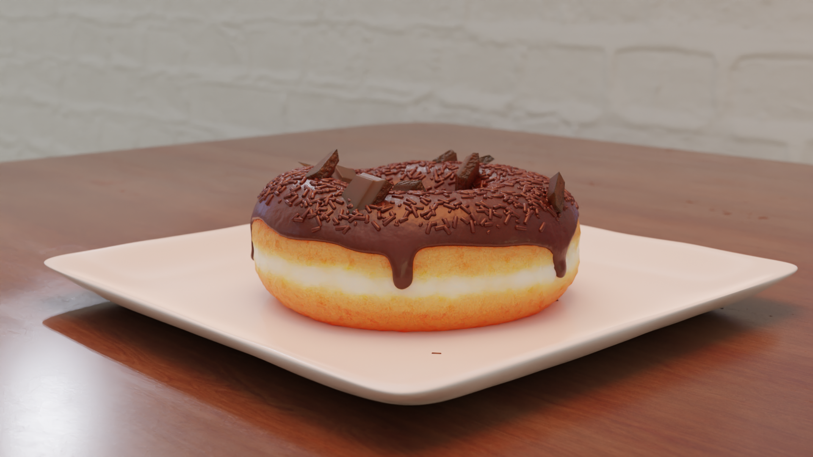I made this, inspired by a blender tutorial for making procedural crystals by CGMatter.
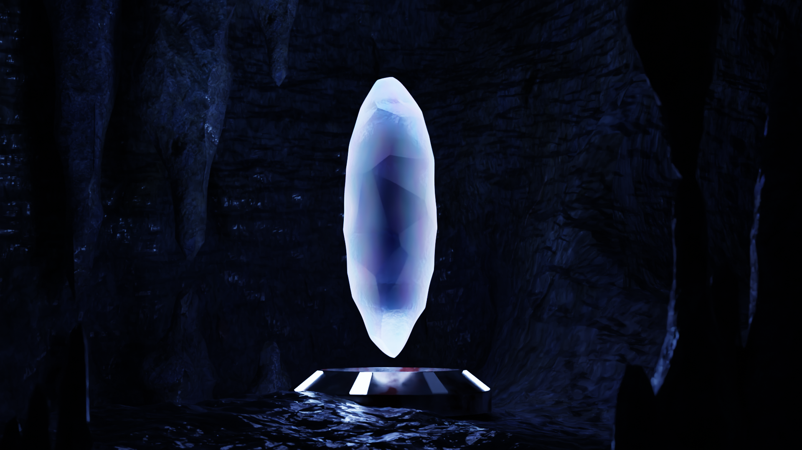This render is actually based on a nightmare I had as a small child, where I was extremely tiny and in a sink. This took a while to complete, probably mostly because it was my first attempt at modeling complete humans. I think it went okay, but I need a lot of improvement.
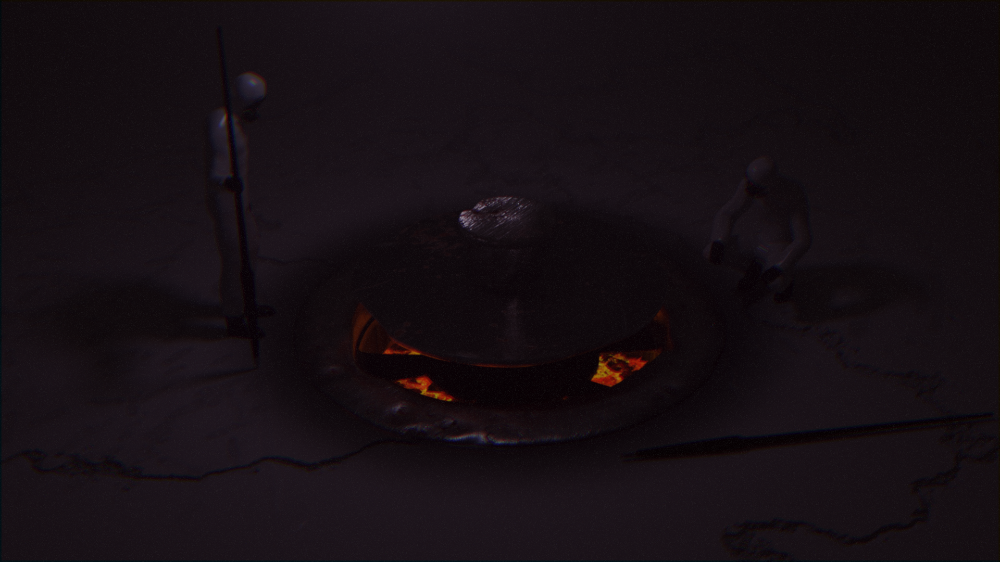I wanted to try modeling a head as practice. Halfway done, inspiration struck me and I knew what I wanted to do with the head. This was the result, and I'm actually pretty proud of it.
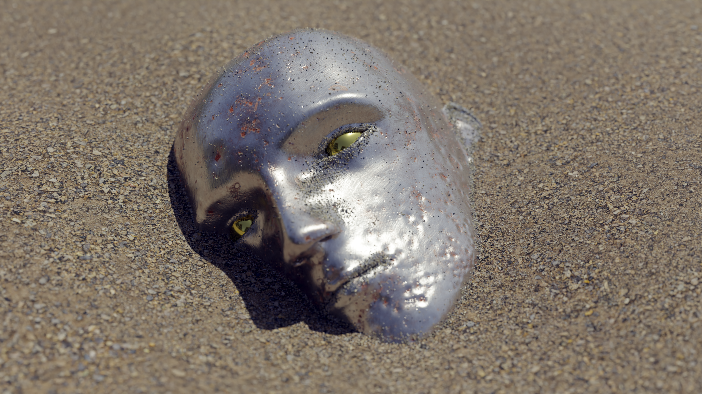This kitchen interior archviz render started as an exercise proposed by CG Cookie in a video. I wanted to challenge myself further and complete the render when I was done with the modeling exercise, and this is the result. Took about 20 hours to render. The denoiser I usually use thought the holes in the grater was all noise, so I had to use 40960 samples instead.
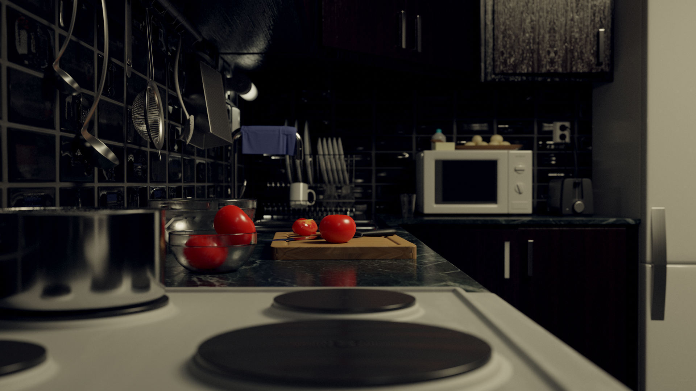A paper written as part of the CorSA: Correct-by-design and Socially Acceptable Autonomy, published in HRI '21, ACM/IEEE International Conference on Human-Robot Interaction.
The paper is available here.
The subject of human-robot interaction in the context of the game of chicken is explored in the paper. My contribution was to create the simulation in Unity that generated all of the data, which forms the foundation for the study.
My thesis partner was Anton Lövström and our supervisor was Dilian Gurov.
The thesis was written with KTH and published on KTH's publication database DiVA. This link leads to the publication website.
The subject of the thesis is the evaluation of a framework for proving the correctness of compositions in system-level contracts. The framework was developed earlier by Mattias Nyberg, Jonas Westman and Dilian Gurov.